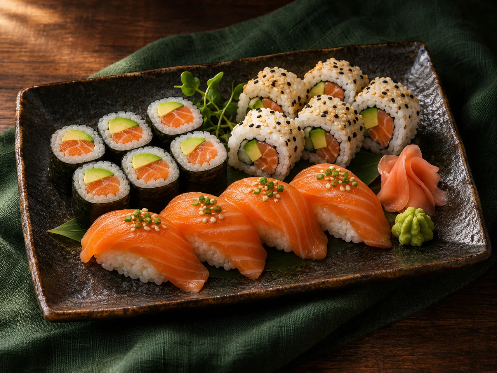
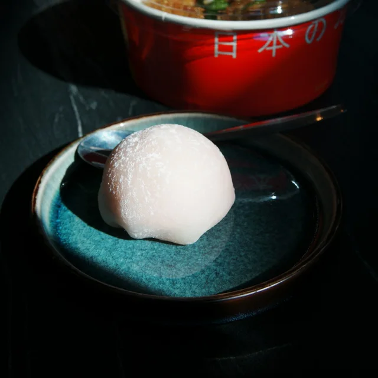

Wiesmoor · Ostfriesland
Asia37 Restaurant & Sushi Bar
Sushi am Wochenendbuffet, hausgemachte Limonade und vietnamesischer Kaffee.


- Buffettage
- Freitag bis Sonntag
- Buffetzeiten
- 15:30–21:00 Uhr
- Zum Mitnehmen
- Alle Gerichte
Unser Haus
Asiatische Küche in Wiesmoor
Wir freuen uns auf Ihren Besuch am Kornblumenweg 2. Für Privatfeiern ab 15 Personen sind auch Termine unter der Woche nach Vereinbarung möglich.
Öffnungszeiten & AnfahrtGetränke & Desserts
Vietnamesischer Kaffee, hausgemachte Limonade mit Limette und Minze oder Mochi-Eis zum Dessert.
Zur Getränke- und Dessertkarte

- Buffetzeiten
- 15:30–21:00 Uhr
- Kinder von 4 bis 12 Jahren
- 1,30 € pro Lebensjahr
Kontakt & Anfahrt
Zu Gast in Wiesmoor
Alle Gerichte gerne auch zum Mitnehmen.
Öffnungszeiten
- Montag, Mittwoch bis Freitag
- 11:00–15:00 und 17:00–22:00 Uhr
- Samstag und Sonntag
- 12:00–22:00 Uhr
- Dienstag
- Ruhetag · An Feiertagen geöffnet